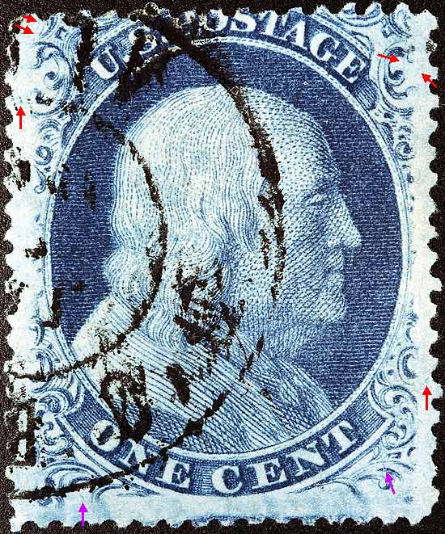
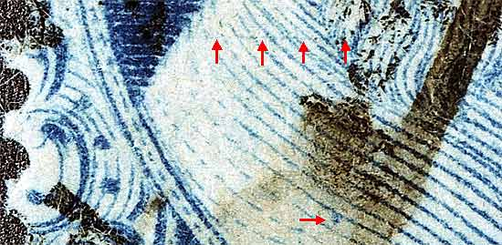
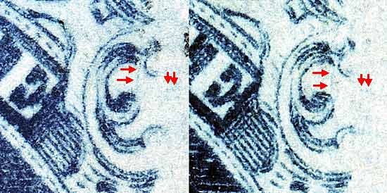
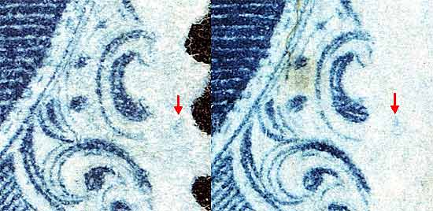
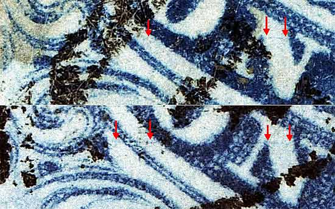
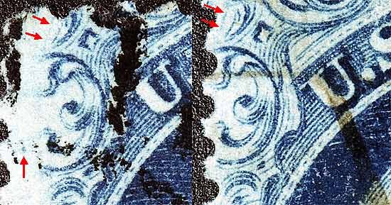

1¢ Franklin Issue of 1857-1861, PLATE 8 Pos 4R8, (Scott #24) |
| Scott #24 Blue, Type V, Relief A Issued only Perforate. Page 416 in Neinken states that Position 4R8 does not have plating marks. Several copies of 4R8 had to be obtained for confirmation of plating marks (red arrows). The violet arrows are other marks of note which may or may not be constant. Stamps from Positions 4R8 thru 10R8 also show a heavy dot on the shoulder above the "N" of ONE. This dot occurs in the same place on these seven positions and readily identifies such stamps as coming from the right pane of Plate 8. On this copy it is obscured by cancellation ink. |
|  |
| FIGURE 1. (Below) Horizontal scribe lines or scratch across Franklins shoulder even with Ornament E. Positions 4R8 thru 10R8 also show a heavy dot on the shoulder above the "N" of ONE. This dot occurs in the same place on these seven positions and readily identifies such stamps as coming from the right pane of Plate 8.
 |
| FIGURE 2. (Below) Almost vertical line of color, quite faint, in the upper half of Ornament L/M. There is also a faint pair of dots to the right and below Ornament L.
 |
| FIGURE 3. (Below) Blur of color to the right or Ornament Q.
 |
| FIGURE 4. (Below) Faint scribe line or scratch, near perfectly horizontal, cutting through the N of ONE, through the shadow of O and extending into the lower part of Ornament H. It is very faint and most likely fades away as the plate wears.
 |
| FIGURE 5. (Below) A diagonal line of color to the left of the small unnamed ornament between Ornaments A and S.
 |
DISCLAIMER and COPYRIGHT INFORMATION: Thanks for visiting this site. I hope you learn something new as we are making new discoveries all the time. You, the visitor, have my permission to link to my pages and to share the INFORMATION with others. The images themselves fall under the fair use guidelines established by the United States Congress and Copyright law. Basically contact us before using. I also ask in return that you send me an e-mail if I have made a mistake, or have made some other technical blunder that in my rush to put these pages up would cause the visitor confusion. Please also visit my other website at www.slingshotvenus.com. and support the live music arts. While your there, be sure to purchase our music. There are not many philatelic rock stars around and we need all the help we can get. :-) I can be reached at: nerdman@ix.netcom.com Update 12/18/07 |